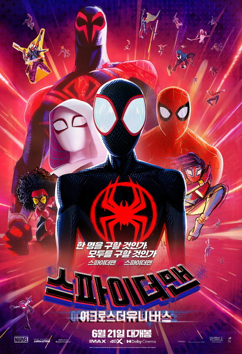

영화 사이트
영화순위 1

|
|
|
|

|

|

|
| 디즈니·픽사의 놀라운 상상력!
올여름, 세상이 살아 숨 쉰다
불, 물, 공기, 흙 4개의 원소들이 살고 있는 ‘엘리멘트 시티’
재치 있고 불처럼 열정 넘치는 ‘앰버'는 어느 날 우연히
유쾌하고 감성적이며 물 흐르듯 사는 '웨이드'를 만나 특별한 우정을 쌓으며,
지금껏 믿어온 모든 것들이 흔들리는 새로운 경험을 하게 되는데...
제 76회 칸 영화제 폐막작 선정!
<굿 다이노> 피터 손 감독 연출
<인사이드 아웃>, <소울> 피트 닥터 제작 참여
6월 14일 극장 대개봉,
웰컴 투 ‘엘리멘트 시티’! |
모험의 또 다른 이름, 마침내 그가 돌아왔다
1969년 뉴욕
전설적인 모험가이자 고고학자 ‘인디아나 존스’ 앞에
대녀 ‘헬레나’와 오랜 숙적 ‘위르겐 폴러’의 세력이 등장한다.
그들의 목표는 단 하나, 운명의 다이얼.
역사의 흐름을 바꿀 수 있는 다이얼을 차지하려는 쫓고 쫓기는 위협 속에
‘인디아나 존스’는 전 세계를 무대로 하는 새로운 모험에 뛰어드는데…
“난 평생 이걸 찾아 헤맸어”
끝나지 않은 모험, 전설은 영원하다 |
대체불가 괴물형사 마석도, 서울 광수대로 발탁!
베트남 납치 살해범 검거 후 7년 뒤,
‘마석도’(마동석)는 새로운 팀원들과 함께 살인사건을 조사한다.
사건 조사 중, ‘마석도’는 신종 마약 사건이 연루되었음을 알게 되고 수사를 확대한다.
한편, 마약 사건의 배후인 '주성철'(이준혁)은 계속해서 판을 키워가고
약을 유통하던 일본 조직과 '리키'(아오키 무네타카)까지 한국에 들어오며
사건의 규모는 점점 더 커져가는데...
나쁜 놈들 잡는 데 이유 없고 제한 없다
커진 판도 시원하게 싹 쓸어버린다! |
스파이더맨 VS 스파이더맨?!
여러 성장통을 겪으며 새로운 스파이더맨이 된 ‘마일스 모랄레스’.
그 앞에 다른 평행세계의 스파이더우먼 ‘ 그웬’이 다시 나타난다.
모든 차원의 멀티버스 속 스파이더맨들을 만나게 되지만,
질서에 대한 신념이 부딪히며 예상치 못한 균열이 생기는데…
상상 그 이상을 넘어서는 멀티버스의 세계가 열린다! |
“난 단 한번도 타겟을 놓쳐 본 적이 없거든”
필리핀에서 불법 경기장을 전전하며 병든 어머니와 살아가는 복싱 선수 ‘마르코’.
어머니의 수술비 마련을 위해 평생 본 적 없는 아버지를 만나러 한국으로 향하던
그의 앞에 정체불명의 남자 ‘귀공자’가 나타나 그를 추격하기 시작한다.
‘마르코’ 주위를 쑥대밭으로 만들며 숨통을 조여오는 ‘귀공자’를 필두로,
‘마르코’를 집요하게 추격하는 재벌 2세 ‘한이사’,
필리핀에 이어 한국에서 우연히 ‘마르코’와 재회한 미스터리한 인물 ‘윤주’까지.
각기 다른 목적을 가진 이들은 단 하나의 타겟을 쫓아 모여들고,
그 무엇도 예측할 수 없는 혼란과 광기 속
‘마르코’는 충격적인 진실을 마주하게 되는데…
단 하나의 타겟, 광기의 추격이 시작된다! |